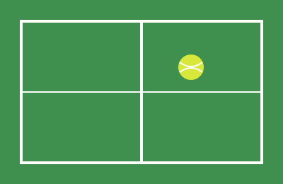

Теніс — це гра, у якій поєднуються швидкість, увага та терпіння. Кожен розіграш схожий на коротку шахову партію, тільки на бігу.
Мені подобається, що теніс можна грати в будь-якому віці. Регулярні тренування дають енергію та допомагають триматися у формі.
Для початку достатньо ракетки, м'ячів і зручного спортивного взуття. Усе інше приходить із практикою.
Дивитися професійні матчі теж цікаво: сайт ATP Tour.